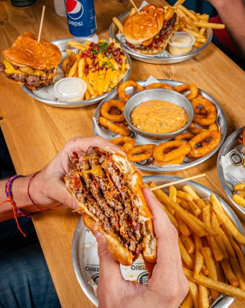

¿Quienes somos?
Hace dos años en el barrio de Recoleta, 3 amigos se unieron para crear “Mi Barrio Hamburguesería”, un restó que se destaca por sus hamburguesas artesanales. Tras recibir una gran aceptación por parte del público hoy cuentan con doce locales en todo Buenos Aires. Mi Barrio sigue creciendo para ser la hamburguesería artesanal más grande de Argentina.

Su propuesta se resume a 17 variedades de hamburguesas gourmet, representando con sus nombres la esencia de diversos barrios de la ciudad. La fórmula es simple: pan casero de elaboración propia, medallones con 100% carne vacuna y una deliciosa combinación de ingredientes que dan como resultado una tentadora hamburguesa. Además, todos los meses Mi Barrio ofrece una “hamburguesa del mes” en donde ofrecen una exclusiva combinación de ingredientes especialmente seleccionados para complacer los paladares más exigentes.
La más pedida por sus clientes es la Palermo, realizada con 170 gramos de carne, cheddar, panceta, huevo a la plancha, cebolla y salsa barbacoa. También encontramos delicias como Recoleta, 170 gramos de carne, rúcula, brie, cebolla caramelizada y Barrionesa de aceto. Una variedad de pollo,Nuñez, 170 gramos de Pollo, panceta, mozzarella, lechuga, tomate, mostaza a la miel o una opción vegetariana: Agronomía, Hamburguesa de Vegetales, Mozzarella, tomate confit, cebolla morada, brotes frescos, champiñones salteados, Barrionesa de calabaza; acompañada de mix de verdes. Todas sus hamburguesas pueden pedirse solas o en combo con papas o batatas fritas y las deliciosas papas fritas Mi Barrio.
En cuanto a las bebidas, Mi Barrio propone disfrutar de tres variedades de su limonada casera, clásica, de frutos rojos o de menta y jengibre. Además, cuentan con una cerveza artesanal “Don Santiago Ortuzar” en dos variedades, Rubia y Roja, que prometen un maridaje perfecto con todos los platos de la carta.
Una experiencia “Gourmet” que se expande ofreciendo sus deliciosas hamburguesas con sabores que sorprenden en un clima distendido, “Mi Barrio” es el lugar ideal para disfrutar de hamburguesas caseras 100% gourmet.